垃圾收集器与内存分配策略
当我们需要排查各种内存溢出,内存泄漏问题时,当垃圾收集成为系统达到更高并发量的瓶颈时,我们就必须对这些“自动化”的技术实施必要的监控和调节。
在Java内存运行时区域中的程序计数器,虚拟机栈,本地方法栈这3个区域随线程而生,随线程而灭，所需的内存大体在编译期即可知，因此这几个区域的内存分配和回收都具备确定性。
而Java堆和方法区这两个区域则有着很显著的不确定性,只有处于运行期间,我们才能知道程序究竟会创建哪些对象,创建多少个对象,这部分内存的分配和回收是动态的。
垃圾收集器关注的正是Java堆和方法区这2部分的内存该如何管理。
一、判定对象是否存活
1. 引用计数算法
引用计数算法即在对象中添加一个引用计数器,每当有一个地方引用它时,计数器值就加一；当引用失效时,计数器值就减一；任何时刻计数器为零的对象就是不可能再被使用的.
微软COM技术,使用ActionScript 3的FlashPlayer,Python语言以及在游戏脚本领域得到许多应用的Squirrel中都使用了引用计数算法进行内存管理，但是主流的Java虚拟机里面都没有选用引用计数算法来管
理内存。引用计数算法有时需要配合大量额外处理才能解决很多例外情况，例如单纯的引用计数就很难解决对象之间相互循环引用的问题。
1 | ReferenceCountingGC objA = new ReferenceCountingGC(); |
2. 可达性分析算法
当前主流的商用程序语言(Java,C#,Lisp)的内存管理子系统,都是通过可达性分析算法来判定对象是否存活的.
可达性分析算法通过一系列称为“GC Roots”的根对象作为起始节点集,从这些节点开始,根据引用关系向下搜索对象，若某个对象到GC Roots之间不存在引用链即不可达时，判定此对象已死亡，即可被回收的对象。
可作为GC Roots的对象包括以下几种:
在虚拟机栈(栈帧中的本地变量表)中引用的对象；
在方法区中类静态属性引用的对象；
在方法区中常量引用的对象;
在本地方法栈中JNI(即通常所说的Native方法)引用的对象;
Java虚拟机内部的引用,如基本数据类型对应的Class对象,一些常驻的异常对象(比如 NullPointExcepiton,OutOfMemoryError)等,还有系统类加载器;
所有被同步锁(synchronized关键字)持有的对象;
反映Java虚拟机内部情况的JMXBean,JVMTI中注册的回调,本地代码缓存等.
此外还可以有其他对象“临时性”地加入,共同构成完整GC Roots集合。
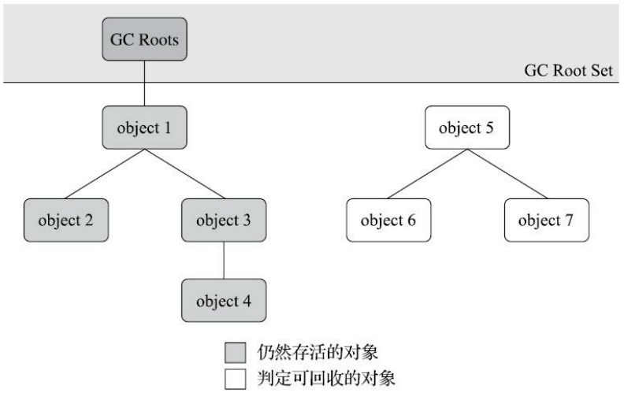
3. 引用的类型
强引用：指在程序代码之中普遍存在的引用赋值,如
Object obj=new Object()，任何情况下,只要强引用关系还存在,垃圾收集器就永远不会回收掉被引用的对象。软引用：指一些还有用,但非必须的对象,JDK 1.2版之后提供了
SoftReference类来实现软引用,只被软引用关联着的对象,在系统将要发生内存溢出异常前,会把这些对象列进回收范围之中进行第二次回收,如果这次回收还没有足够的内存, 才会抛出内存溢出异常。弱引用：也指非必须的对象，但强度比软引用更弱，在JDK 1.2版之后提供了
WeakReference类来实现弱引用,被弱引用关联的对象只能生存到下一次垃圾收集发生为止，当垃圾收集器开始工作,无论当前内存是否足够,都会回收掉只被弱引用关联的对象。虚引用：也称为“幽灵引用”或者“幻影引用”,它是最弱的一种引用关系,在JDK 1.2版之后提供了
PhantomReference类来实现虚引用,为一个对象设置虚引用关联的唯一目的只是为了能在这个对象被收集器回收时收到一个系统通知,它不会对该对象的生存时间构成影响，也无法通过虚引用来取得一个对象实例。
4. 对象的自我拯救（finalize方法）
要真正宣告一个对象死亡,至少要经历两次标记过程：
- 一次标记：当对象在进行可达性分析后发现没有与GC Roots相连接的引用链则进行一次标记。
- 一次筛选：筛选对象是否有必要执行finalize()方法，假如对象没有覆盖finalize()方法,或者finalize()方法已经被虚拟机调用过(虚拟机只会执行一次该方法),那么虚拟机将这两种情况都视为“没有必要执行”。
如果这个对象被判定为确有必要执行finalize()方法,那么该对象将会被放置在一个名为F-Queue的队列之中,并在稍后由一条由虚拟机自动建立的,低调度优先级的Finalizer线程去执行它们的finalize()方法。
虚拟机在执行finalize()方法时并不承诺一定等待它运行结束，finalize()方法是对象逃脱死亡命运的最后一次机会如果对象要在finalize()中成功拯救自己——只要重新与引用链上的任何一个对象建立关联即可,譬如把自己 (this关键字)赋值给某个类变量或者对象的成员变量,那在第二次标记时它将被移出“即将回收”的集 合；如果对象这时候还没有逃脱,那基本上它就真的要被回收了。
finalize()方法只是Java刚诞生时为了使传统C,C++程序员更容易接受Java所做出的一 项妥协，它的运行代价高昂,不确定性大,无法保证各个对象的调用顺序,如今已被官方明确声明为不推荐使用的语法。
1 | public static FinalizeEscapeGC SAVE_HOOK = null; |
5. 回收方法区
方法区回收囿于苛刻的判定条件,其区域垃圾收集的回收成果往往远低于其它区域。
方法区主要回收废弃的常量和不再使用的类型：
若已经没有任何字符串对象引用常量池中的某个常量，且虚拟机中也没有其他地方引用这个字面量,如果在这时发生内存回收,而且垃圾收集器判断确有必要的话,这个常量就将会被系统清理出常量池.常量池中其他类(接口),方法,字段的符号引用也与此类似。
判定一个类型是否属于“不再被使用的类”需要同时满足下面三个条件：
- 该类所有的实例都已经被回收,也就是Java堆中不存在该类及其任何派生子类的实例。
- 加载该类的类加载器已经被回收,这个条件除非是经过精心设计的可替换类加载器的场景,如 OSGi,JSP的重加载等,否则通常是很难达成的。
- 该类对应的java.lang.Class对象没有在任何地方被引用,无法在任何地方通过反射访问该类的方法。
满足条件后只是被允许回收，关于是否要对类型进行回收：
- HotSpot虚拟机提供了
-Xnoclassgc参数进行控制; - Product版的虚拟机提供了
-verbose:class以及-XX: +TraceClass-Loading; - FastDebug版的虚拟机提供了
-XX: +TraceClassUnLoading。
- HotSpot虚拟机提供了
在大量使用反射,动态代理,CGLib等字节码框架,动态生成JSP以及OSGi这类频繁自定义类加载器的场景中,通常都需要Java虚拟机具备类型卸载的能力,以保证不会对方法区造成过大的内存压力。
二、垃圾收集算法
从如何判定对象消亡的角度出发,垃圾收集算法可以划分为“引用计数式垃圾收集(直接垃圾收集)”和“追踪式垃圾收集(间接垃圾收集)”两大类,主流Java虚拟机中大都采用追踪式垃圾收集。
1. 分代收集理论
1.1 分代收集理论的三条经验法则
弱分代假说：绝大多数对象都是朝生夕灭的；
强分代假说：熬过越多次垃圾收集过程的对象就越难以消亡；
跨代引用假说：跨代引用相对于同代引用来说仅占极少数。
1.3 Java堆的年代划分
现在的商用Java虚拟机里一般至少会把Java堆划分为新生代和老年代两个区域。在新生代中,每次垃圾收集时都发现有大批对象死去,而每次回收后存活的少量对象,将会逐步晋升到老年代中存放。
HotSpot的“分代式垃圾收集器框架”包括一些名为“Generation”的实现，如
DefNewGeneration和ParNewGeneration等。由于在新生代能以较低代价回收到大量的空间，而可以使用较低的频率来回收老年代这个区域，这就同时兼顾了垃圾收集的时间开销和内存的空间有效利用。
由于对象之间会存在少量跨代引用，而新生代中的跨代引用不能被回收，因此需要在新生代上建立一个全局的数据结构(记忆集)把老年代划分成若干小块,并标识哪一块内存会存在跨代引用，此后当发生Minor GC时,只有包含了跨代引用的小块内存里的对象才会被加入到GC Roots进行扫描。
1.2 回收类型的划分
根据分代收集理论的三条经验法以及Java堆的分代划分可以将回收类型进行如下划分：
部分收集(Partial GC)：指目标不是完整收集整个Java堆的垃圾收集，又分为：
- 新生代收集（Minor GC/Young GC）：指目标只是新生代的垃圾收集。
- 老年代收集（Major GC/Old GC）:指目标只是老年代的垃圾收集。目前只有CMS收集器会有单独收集老年代的行为，且Major GC需要按上下文区分到底是指老年代的收集还是整堆收集。
- 混合收集（Mixed GC）:指目标是收集整个新生代以及部分老年代的垃圾收集。目前只有G1收集器会有这种行为。
整堆收集（Full GC）:收集整个Java堆和方法区的垃圾收集。
2. 标记-清除算法
标记-清除算法分两个阶段：
- 标记：标记过程就是对象是否属于垃圾的判定过程。
- 清除：统一回收掉被标记的对象。
可以首先标记出所有需要回收的对象然后清除，也可以反过来首先标记存活的对象，清除所有未被标记的对象。
标记-清除算法是最基础的收集算法，后续的收集算法大多都是以标记-清除算法为基础,对其缺点进行改进而得到的。
主要缺点：
- 执行效率不稳定，标记和清除的执行效率随着回收对象数量的增长而降低；
- 内存空间碎片化，标记清除后产生的大量不连续内存碎片可能会导致当以后在程序运行过程中需要分配较大对象时无法找到足够的连续内存而不得不提前触发另一次垃圾收集动作。
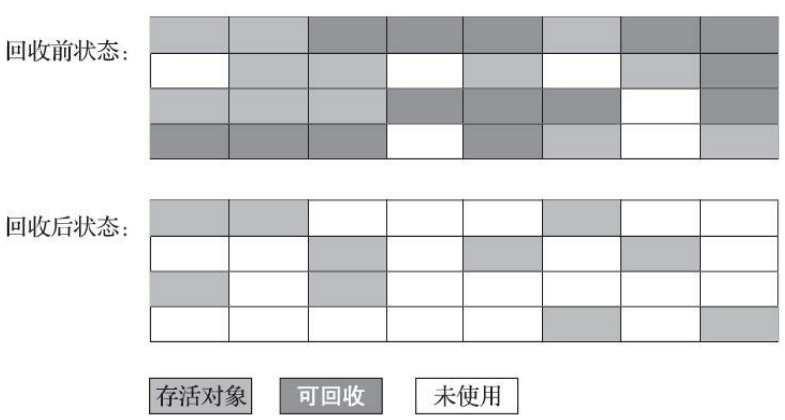
3. 标记-复制算法（回收新生代）
解决了标记-清除算法执行效率低的问题。
- 半区复制算法：将可用内存按容量划分为大小相等的两块,每次只使用其中的一块，当这一块的内存用完了,就将还存活着的对象复制到另外一块上面,然后再把已使用过的内存空间一次清理掉。
- 对于多数对象都是存活的情况，将产生大量内存复制开销；
- 将可用内存缩小为了原来的一半，空间浪费较大。而IBM公司研究表明新生代中的对象有98%熬不过第一轮收集。
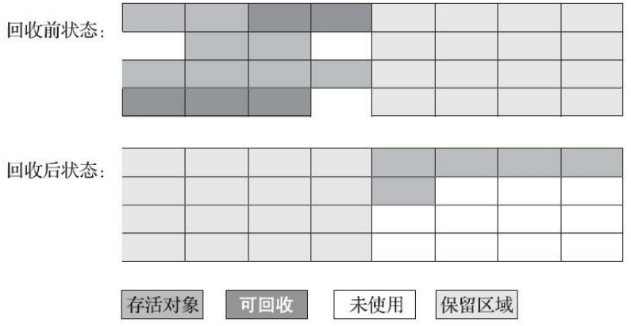
- Appel式回收（优化的半区复制算法）：把新生代分为一块较大的Eden空间和两块较小的Survivor空间,每次分配内存只使用Eden和其中一块Survivor，发生垃圾搜集时,将Eden和Survivor中仍然存活的对象一次性复制到另外一块Survivor空间上,然后直接清理掉Eden和已用过的那块Survivor空间。
- HotSpot虚拟机默认Eden和Survivor的大小比例是8∶1，可用空间为Eden80%加上一个Survivor10%，复制空间为另一个10%的Survivor空间。
- 没有办法百分百保证每次回收都只有不多于10%的对象存活，当Survivor空间不足以容纳一次Minor GC之后存活的对象时,就需要依赖其他内存区域(实际上大多就是老年代)进行分配担保。
4. 标记-整理算法（回收老年代）
其中的标记过程仍然与“标记-清除”算法一样,但后续步骤不是直接对可回收对象进行清理,而是让所有存活的对象都向内存空间一端移动,然后直接清理掉边界以外的内存。
优缺点：
- 在老年代这种每次回收都有大量对象存活区域,移动存活对象并更新所有引用这些对象的地方将会是一种极为负重的操作,而且这种对象移动操作必须全程暂停用户应用程序才能进行，被称为Stop The World。
- 对象移动则内存回收时会更复杂,不移动则内存分配时会更复杂。
- 因内存分配和访问相比垃圾收集频率要高得多，故从整个程序的吞吐量来看移动对象会更划算。
HotSpot虚拟机里面关注吞吐量的Parallel Scavenge收集器是基于标记-整理算法的,而关注延迟的CMS收集器则基于标记-清除算法。
“和稀泥式”解决方案：让虚拟机平时多数时间都采用标记-清除算法,暂时容忍内存碎片的存在,直到内存空间的碎片化程度已经大到影响对象分配时,再采用标记-整理算法收集一次,以获得规整的内存空间，例如CMS收集器。
三、HotSpot的算法细节实现
1. 根节点枚举
迄今为止,所有收集器在根节点枚举这一步骤时都是必须暂停用户线程的,它会面临相似的“Stop The World”的困扰，这是导致垃圾收集过程必须停顿所有用户线程的其中一个重要原因。
目前主流的Java虚拟机使用的都是准确式垃圾收集,即利用某些数据结构清楚记录哪些地方存放着对象引用，所以当用户线程停顿下来之后,并不需要一个不漏地检查完所有执行上下文和全局的引用位置,虚拟机应当是有办法直接得到哪些地方存放着对象引用的。
HotSpot使用OopMap数据结构在类加载完成时就会在特定的位置记录下栈里和寄存器里哪些位置是引用，这样收集器在扫描时就可以直接得知这些信息了,并不需要真正一个不漏地从方法区等GC Roots开始查找。
2. 安全点
HotSpot没有为每条指令都生成OopMap,只是在“特定的位置”记录栈里和寄存器里哪些位置是引用,这些位置被称为安全点(Safepoint)。
用户程序执行时并非在代码指令流的任意位置都能够停顿下来开始垃圾收集,而是强制要求必须执行到达安全点后才能够暂停。
安全点位置的选取基本上是以“是否具有让程序长时间执行的特征”为标准进行选定的,如方法调用,循环跳转,异常跳转等这些指令序列复用。
虚拟机暂停线程响应GC事件的方法：
- 抢先式中断：无需线程的执行代码主动去配合,在GC发生时,系统首先把所有用户线程全部中断,如果发现有用户线程中断的地方不在安全点上,就恢复这条线程执行,让它一会再重新中断,直到跑到安全点上，现在几乎没有虚拟机实现采用此方式。
- 主动式中断: 当GC需要中断线程的时候,不直接对线程操作,仅仅简单地设置一个标志位(与安全点重合，另外还要加上所有创建对象和其他需要在Java堆上分配内存的地方),各个线程执行过程时会不停地主动去轮询这个标志,一旦发现中断标志为真时就自己在最 近的安全点上主动中断挂起。
- HotSpot使用内存保护陷阱的方式, 把轮询操作精简至只有一条汇编指令的程度，使其足够高效。
3. 安全区域
安全区域是指能够确保在某一段代码片段之中,引用关系不会发生变化,因此,在这个区域中任意地方开始垃圾收集都是安全的，我们也可以把安全区域看作被扩展拉伸了的安全点。
当用户线程执行到安全区域里面的代码时,首先会标识自己已经进入了安全区域,那样当这段时间里虚拟机要发起垃圾收集时就不必去管这些已声明自己在安全区域内的线程了,当线程要离开安全区域时,它要检查虚拟机是否已经完成了根节点枚举(或者垃圾收集过程中其他需要暂停用户线程的阶段),如果完成了,那线程就当作没事发生过,继续执行；否则它就必须一直等待,直到收到可以离开安全区域的信号为止.
4. 记忆集与卡表
- 记忆集是一种用于记录从非收集区域指向收集区域的指针集合的抽象数据结构,考虑效率和成本，有三种实现方式：
- 字长精度：每个记录精确到一个机器字长，该字包含跨代指针。
- 对象精度：每个记录精确到一个对象,该对象里有字段含有跨代指针。
- 卡精度（卡表）：最常用，每个记录精确到一块内存区域,该区域内有对象含有跨代指针。
- 卡表最简单的形式可以只是一个字节数组，例
CARD_TABLE[this address >> 9] = 0;,HotSpot虚拟机即采用这种方式。
- 字节数组
CARD_TABLE的每一个元素都对应着其标识的内存区域中一块特定大小的内存块,这个内存块被称作卡页(Card Page)。 - 一般来说,卡页大小都是以2的N次幂的字节数,HotSpot中使用的卡页是2的9次幂,即512字节(地址右移9位,相当于用地址除以512)。
- 一个卡页的内存中通常包含不止一个对象,只要卡页内有一个(或更多)对象的字段存在着跨代指针,那就将对应卡表的数组元素的值标识为1,称为这个元素变脏(Dirty),没有则标识为0。
- 在垃圾收集发生时,只要筛选出卡表中变脏的元素,就能轻易得出哪些卡页内存块中包含跨代指针,把它们加入GC Roots中一并扫描。
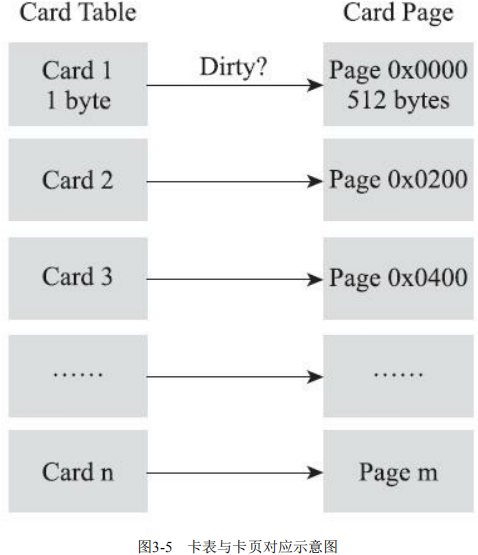
5. 写屏障
在HotSpot虚拟机里是通过写屏障(Write Barrier)技术维护卡表状态的。
写屏障可以看作在虚拟机层面对“引用类型字段赋值”这个动作的AOP切面,在引用对象赋值时会产生一个环形(Around)通知,供程序执行额外的动作,也就是说赋值前后都在写屏障的覆盖范畴内.在赋值前的部分的写屏障叫作写前屏障(Pre-Write Barrier),在赋值后的则叫作写后屏障(Post-Write Barrier)，至G1收集器出现之前,其他收集器都只用到了写后屏障。
应用写屏障后,虚拟机就会为所有赋值操作生成相应的指令,一旦收集器在写屏障中增加了更新卡表操作,无论更新的是不是老年代对新生代对象的引用,每次只要对引用进行更新,就会产生额外的开销,不过这个开销与Minor GC时扫描整个老年代的代价相比还是低得多的。
伪共享：现代中央处理器的缓存系统中是以缓存行(Cache Line) 为单位存储的,当多线程修改互相独立的变量时,如果这些变量恰好共享同一个缓存行,就会彼此影响(写回,无效化或者同步)而导致性能降低,这就是伪共享问题。为了避免伪共享问题,一种简单的解决方案是不采用无条件的写屏障,而是先检查卡表标记,只有当该卡表元素未被标记过时才将其标记为变脏。
在JDK 7之后,HotSpot虚拟机增加了一个新的参数
-XX：+UseCondCardMark,用来决定是否开启卡表更新的条件判断,开启会增加一次额外判断的开销。
6. 并发的可达性分析
可达性分析算法理论上要求全过程都基于一个能保障一致性的快照中才能够进行分析, 这意味着必须全程冻结用户线程的运行，其中根节点枚举这个步骤在各种优化技巧(如OopMap)的加持下,它带来的停顿已经是非常短暂且相对固定(不随堆容量而增长)的了，而从GC Roots再继续往下遍历对象图标记的过程会随着堆变大而等比例增加停顿时间，其影响就会波及几乎所有的垃圾收集器。
可达性分析需要一致性快照的原因：用户线程与收集器并发工作时会修改对象图结构，可能将原本消亡的对象错误标记为存活（非致命），或者把原本存活的对象错误标记为已消亡(对象消失，致命)。
三色标记：把遍历对象图过程中遇到的对象,按照“是否访问过”这个条件进行标记。
- 白色：表示对象尚未被垃圾收集器访问过，显然在可达性分析刚刚开始的阶段,所有的对象都是白色的,若在分析结束的阶段,仍然是白色的对象,即代表不可达.
- 黑色：表示对象已经被垃圾收集器访问过，且这个对象的所有引用都已经扫描过，代表安全存活对象,如果有其他对象引用指向了黑色对象,无须重新扫描一遍，黑色对象不可能直接(不经过灰色对象)指向某个白色对象。
- 灰色：表示对象已经被垃圾收集器访问过,但这个对象上至少存在一个引用还没有被扫描过。
- 产生对象消失的问题（原本应该是黑色的对象被误标为白色）必须满足的两个条件：
- 赋值器插入了一条或多条从黑色对象到白色对象的新引用；
- 赋值器删除了全部从灰色对象到该白色对象的直接或间接引用。
- 解决并发扫描时的对象消失问题的两种解决方案：
- 增量更新：破坏的是第一个条件,当黑色对象插入新的指向白色对象的引用关系时,就将这个新插入的引用记录下来,等并发扫描结束之后,再将这些记录过的引用关系中的黑色对象为根,重新扫描一次.这可以简化理解为,黑色对象一旦新插入了指向白色对象的引用之后,它就变回灰色对象了，例CMS。
- 原始快照SATB:破坏的是第二个条件,当灰色对象要删除指向白色对象的引用关系时,就将这个要删除的引用记录下来,在并发扫描结束之后,再将这些记录过的引用关系中的灰色对象为根,重新扫描一次，这也可以简化理解为,无论引用关系删除与否,都会按照刚刚开始扫描那一刻的对象图快照来进行搜索，例G1,Shenandoah。
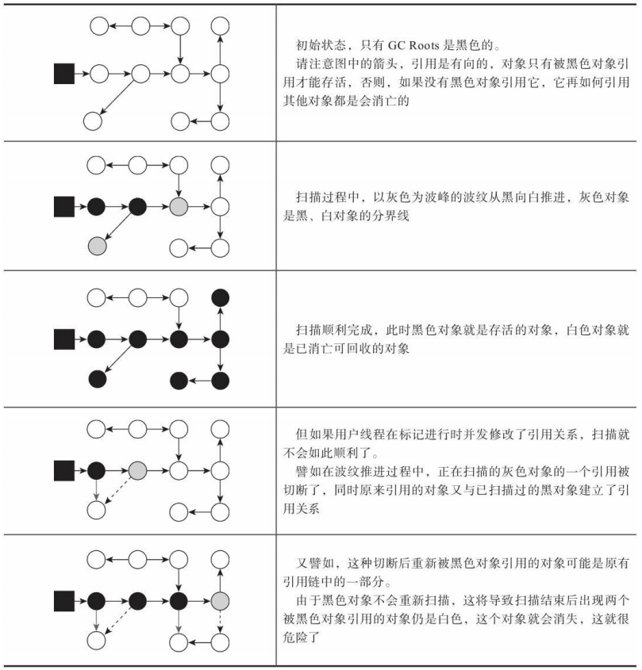
四、经典的垃圾收集器
这里的经典垃圾收集器是指JDK 7 Update 4 之后(在这个版本中正式提供了商用的G1收集器,此前G1仍处于实验状态),JDK 11正式发布之前,OracleJDK中的HotSpot虚拟机所包含的全部可用的垃圾收集器。
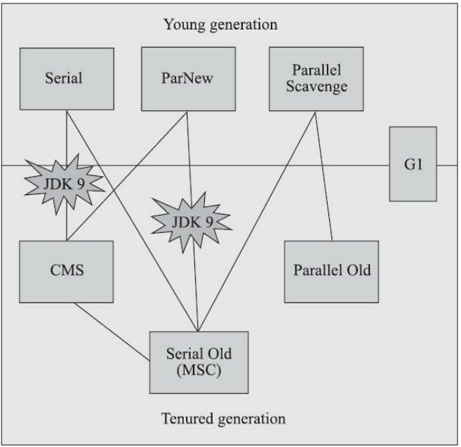
如果两个收集器之间存在连线,就说明它们可以搭配使用。
1. Serial收集器
Serial收集器是单线程的，并不仅仅是说明它只会使用一个处理器或一条收集线程去完成垃圾收集工作,更重要的是强调在它进行垃圾收集时,必须暂停其他所有工作线程,直到它收集结束。
优点：简单而高效(与其他收集器的单线程相比),对于内存资源受限的环境,它是所有收集器里额外内存消耗(Memory Footprint)最小的；对于单核处理器或处理器核心数较少的环境来说,Serial收集器由于没有线程交互的开销,专心做垃圾收集自然可以获得最高的单线程收集效率。
Serial收集器对于运行在客户端模式下的虚拟机来说是一个很好的选择。
Serial/Serial Old收集器:
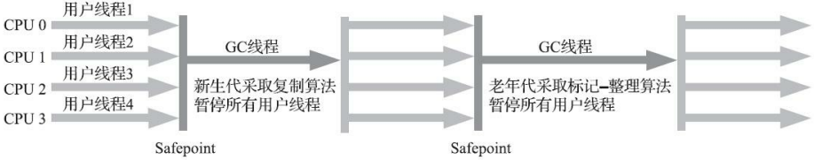
2. ParNew收集器（新生代收集器）
ParNew收集器实质上是Serial收集器的多线程并行版本,除了同时使用多条线程进行垃圾收集之外,其余的行为与Serial收集器完全一致，甚至在实现上共用了相当多的代码。
是不少运行在服务端模式下的HotSpot虚拟机,JDK7之前首选的新生代收集器，且除了Serial收集器外,目前只有它能与CMS 收集器配合工作。
JDK9开始直接取消了- XX：+UseParNewGC参数,这意味着ParNew和CMS从此只能互相搭配使用,再也没有其他收集器能够和它们配合了，即从此以后,ParNew合并入CMS,成为它专门处理新生代的组成部分。ParNew可以说是HotSpot虚拟机中第一款退出历史舞台的垃圾收集器。
并行与并发的含义：
- 并行：并行描述的是多条垃圾收集器线程之间的关系,说明同一时间有多条这样的线程在协同工作,通常默认此时用户线程是处于等待状态。
- 并发：并发描述的是垃圾收集器线程与用户线程之间的关系,说明同一时间垃圾收集器线程与用户线程都在运行.由于用户线程并未被冻结,所以程序仍然能响应服务请求,但由于垃圾收集器线程占用了一部分系统资源,此时应用程序的处理的吞吐量将受到一定影响。
ParNew 收集器：
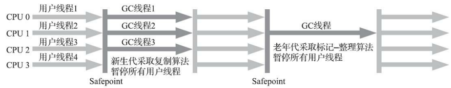
3. Parallel Scavenge收集器(新生代收集器)
Parallel Scavenge收集器是基于标记-复制算法实现的收集器,也是能够并行收集的多线程收集器，它的关注点与其他收集器不同，目标是达到一个可控制的吞吐量(Throughput)，即吞吐量优先收集器。
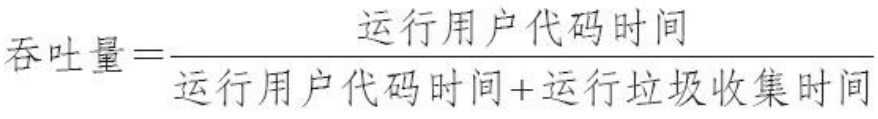停顿时间越短就越适合需要与用户交互或需要保证服务响应质量的程序,良好的响应速度能提升用户体验；而高吞吐量则可以最高效率地利用处理器资源,尽快完成程序的运算任务,主要适合在后台运算而不需要太多交互的分析任务.
Parallel Scavenge收集器提供了两个参数用于精确控制吞吐量：
-XX：Max GCPause Millis: 控制最大垃圾收集停顿时间，是一个大于0的毫秒数；垃圾收集停顿时间缩短是以牺牲吞吐量和新生代空间为代价换取的。-XX：GCTimeRatio: 直接设置吞吐量大小；是一个大于0小于100的整数，即应用程序总执行时间所占比例。
- Parallel Scavenge收集器的自适应调节策略：
-XX：+UseAdaptiveSizePolicy:这是一个开关参数,当这个参数被激活之后,就不需要人工指定新生代的大小-Xmn,Eden与Survivor区的比例-XX：SurvivorRatio,晋升老年代对象大小-XX：PretenureSizeThreshold等细节参数了,虚拟机会根据当前系统的运行情况收集性能监控信息,动态调整这些参数以提供最合适的停顿时间或者最大的吞吐量。
4. Serial Old收集器(老年代收集器)
Serial Old是Serial收集器的老年代版本,是一个单线程收集器,使用标记-整理算法。
主要供客户端模式下的HotSpot虚拟机使用,在服务端模式下可能有两种用途：一种是在JDK 5以及之前的版本中与Parallel Scavenge收集器搭配使用,另外一种就是作为CMS收集器发生失败时的后备预案,在并发收集发生Concurrent Mode Failure时使用。
Parallel Scavenge收集器架构中本身有PS MarkSweep收集器来进行老年代收集,并非 直接调用Serial Old收集器,但是这个PS MarkSweep收集器与Serial Old的实现几乎是一样的，所以可替代。
5. Parallel Old收集器（老年代收集器）
Parallel Old是Parallel Scavenge收集器的老年代版本,支持多线程并发收集,基于标记-整理算法实现。
直到JDK6Parallel Old收集器出现后,“吞吐量优先”收集器终于有了比较名副其实的搭配组合,在注重吞吐量或者处理器资源较为稀缺的场合,都可以优先考虑Parallel Scavenge加Parallel Old收集器这个组合。
Parallel Scavenge/Parallel Old收集器：
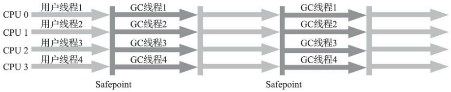
6. CMS收集器（老年代收集器）
CMS(Concurrent Mark Sweep)收集器是一种以获取最短回收停顿时间为目标的收集器，适用于较为关注服务的响应速度,希望系统停顿时间尽可能短,以给用户带来良好的交互体验的应用。
CMS基于标记-清除算法，从总体上来说,内存回收过程是与用户线程一起并发执行的，包括四个步骤：
初始标记(CMS initial mark)：需要Stop The World，仅仅只是标记一下GC Roots能直接关联到的对象,速度很快；
并发标记(CMS concurrent mark):是从GC Roots的直接关联对象开始遍历整个对象图的过程,这个过程耗时较长但是不需要停顿用户线程,可以与垃圾收集线程一起并发运行；CMS采用增量更新算法保证再并发运行时不打破原本的对象图结构。CMS的卡表只有唯一一份,而且只需要处理老年代到新生代的引用.
重新标记(CMS remark)：需要Stop The World，是为了修正并发标记期间,因用户程序继续运作而导致标记产生变动的那一部分对象的标记记录，这个阶段的停顿时间通常会比初始标记阶段稍长一 些,但也远比并发标记阶段的时间短；
并发清除(CMS concurrent sweep)：清理删除掉标记阶段判断的已经死亡的对象,由于不需要移动存活对象,所以这个阶段也是可以与用户线程同时并发的。
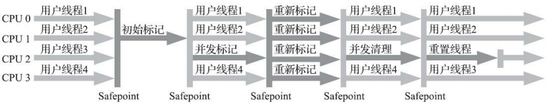
- CMS收集器的缺点：
CMS收集器对处理器资源非常敏感：CMS默认启动的回收线程数是(处理器核心数量 +3)/4,并发回收时垃圾收集线程会随着处理器核心数量的增加而下降,若处理器核心少于4个对用户程序的影响就可能变得很大,就可能导致用户程序的执行速度忽然大幅降低；
由于CMS收集器无法处理浮动垃圾(Floating Garbage，由于并发垃圾收集过程中正在运行用户程序产生的新垃圾是在标记过程后，无法当次收集),有可能出现“Con-current Mode Failure”失败（即老年代被填满后无法供并发收集时的程序运作使用）进而导致另一次完全“Stop The World”的Full GC的产生，可利用参数
-XX：CMS Initiating Occu-pancy Fraction适当设置老年代占用多少百分比的空间后触发CMS垃圾收集过程。CMS基于标记-清除算法会产生大量空间碎片，若无法找到足够大的连续空间来分配当前对象,就不得不提前触发一次Full GC。
7. Garbage First收集器（混合收集器）
G1是一款主要面向服务端应用的垃圾收集器，是CMS收集器的替代者和继承人，G1收集器可以面向堆内存任何部分来组成回收集(Collection Set,一般简称CSet)进行回收,衡量标准不再是它属于哪个分代,而 是哪块内存中存放的垃圾数量最多,回收收益最大,这就是G1收集器的Mixed GC模式。
G1开创的基于Region的堆内存布局是它能够实现停顿时间模型目标（能够支持指定在一个长度为M毫秒的时间片段内,消耗在垃圾收集上的时间大概率不超过N毫秒这样的目标）的关键：
G1不再坚持固定大小以及固定数量的分代区域划分,而是把连续的Java堆划分为多个大小相等的独立区域(Region),每一个Region都可以根据需要,扮演新生代的Eden空间,Survivor空间,或者老年代空间。每个Region的大小可以通过参数
-XX：G1HeapRegionSize设定,取值范围为1MB～32MB,且应为2的N次幂。收集器能够对扮演不同角色的 Region采用不同的策略去处理,这样无论是新创建的对象还是已经存活了一段时间,熬过多次收集的旧对象都能获取很好的收集效果。
Region中还有一类特殊的Humongous区域,专门用来存储大对象.G1认为只要大小超过了一个 Region容量一半的对象即可判定为大对象，而对于那些超过了整个Region容量的超级大对象, 将会被存放在N个连续的Humongous Region之中,G1的大多数行为都把Humongous Region作为老年代的一部分来进行看待。
- G1将Region作为单次回收的最小单元,即每次收集到的内存空间都是Region大小的整数倍，避免整堆收集，具体思路：
G1收集器去跟踪各个Region里面的垃圾堆积的“价值”大小,价值即回收所获得的空间大小以及回收所需时间的经验值。
然后在后台维护一个优先级列表,每次根据用户设定允许的收集停顿时间(使用参数
-XX：MaxGCPauseMillis指定,默认值是200毫秒),优先处理回收价值收益最大的那些Region,这也就是“Garbage First”名字的由来.这种使用Region划分内存空间,以及具有优先级的区域回收方式,保证了G1收集器在有限的时间内获取尽可能高的收集效率。
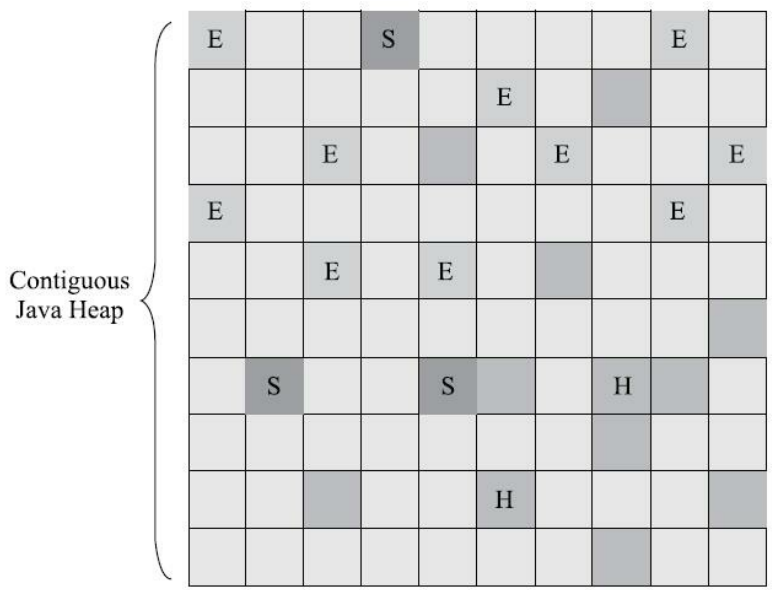
- G1收集器需要解决的问题：
跨Region引用对象的解决方法：在G1收集器上的每个Region都维护有自己的记忆集,这些记忆集会记录下别的Region 指向自己的指针,并标记这些指针分别在哪些卡页的范围之内.G1的记忆集一种双向的卡表结构(卡表是“我指向谁”,这种结构还记录了“谁指向我”)，本质上是种哈希表,Key是别的Region的起始地址,Value是一个集合,里面存储的元素是卡表的索引号。复杂性使G1至少要耗费大约相当于Java堆容量10%至20%的额外内存来维持收集器工作.
保证收集线程与用户线程互不干扰地运行：为了不打破原本的对象图结构，G1采用原始快照算法实现；为了不影响对象分配，G1为每一个Region设计了两个名为TAMS(Top at Mark Start)的指针,把Region中的这两个指针以上的一部分空间划分出来专门用于并发回收过程中的新对象分配,G1收集器默认在 这个地址以上的对象是被隐式标记过的,即默认它们是存活的,不纳入回收范围。但是如果内存回收的速度赶不上内存分配的速度, G1收集器也要被迫冻结用户线程执行,导致Full GC而产生长时间“Stop The World”。
建立可靠的停顿预测模型:用户通过
-XX：MaxGCPauseMillis参数指定垃圾收集的期望停顿时间，然后利用衰减均值理论来实现它，衰减平均值更准确地代表“最近的”平均状态，统计状态越新越能决定其回收的价值。G1收集器会记录每个Region的回收耗时,每个Region记忆集里的脏卡数量等各个可测量的步骤花费的成本,并分析得出平均值,标准偏差,置信度等统计信息。然后通过这些信息预测现在开始回收的话,由哪些Region组成回收集才可以在不超过期望停顿时间的约束下获得最高的收益。
- G1的运作过程：
初始标记：标记GC Roots能直接关联到的对象,修改TAMS 指针的值，需停顿线程，但耗时很短，借用Minor GC同步完成,实际并没有额外的停顿。
并发标记：从GC Root开始对堆中对象进行可达性分析,递归扫描整个堆里的对象图,找出要回收的对象,这阶段耗时较长,但可与用户程序并发执行.当对象图扫描完成以后,还要重新处理SATB记录下的在并发时有引用变动的对象。
最终标记： 对用户线程做另一个短暂的暂停,用于处理并发阶段结束后仍遗留 下来的最后那少量的SATB记录.
筛选回收：由多条收集器线程并行完成，涉及存活对象移动，必须暂停用户线程.对各个Region的回收价值和成本进行排序,根据用户所期望的停顿时间来制定回收计划,自由选择任意多个Region 构成回收集,然后把决定回收的那一部分Region的存活对象复制到空的Region中,再清理掉整个旧Region的全部空间.
- G1与CMS优缺点对比：
G1从整体来看是基于“标记-整理”算法实现的收集器,但从局部(两个Region 之间)上看又是基于“标记-复制”算法实现,故不会产生内存碎片。
G1的卡表实现更为复杂。
CMS用写后屏障来更新维护卡表；而G1除了使用写后屏障来进行同样的(由于G1的卡表结构复杂,其实是更烦琐的)卡表维护操作外,为了实现原始快照搜索 (SATB)算法,还需要使用写前屏障来跟踪并发时的指针变化情况,CMS的写屏障实现是直接的同步操作,而G1就不得不将其实现为类似于消息队列的结构,把写前屏障和写后屏障中要做的事情都放到队列里,然后再异步处理。
目前在小内存应用上CMS的表现大概率仍然要会优于G1,而在大内存应用上G1则大多能发挥其优势,这个优劣势的Java堆容量平衡点通常在6GB至8GB之间。
5. 低延迟垃圾收集器
1.